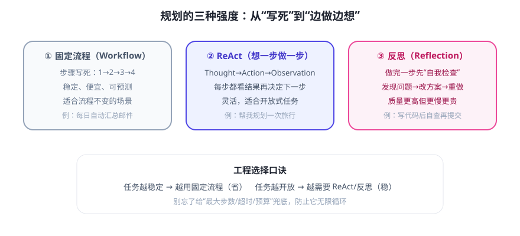

规划（Planning）是 Agent 四要素里的“大脑皮层”：把模糊目标变成可执行步骤，并在执行中根据结果调整。今天把三种常见模式讲清楚，并给出选择方法。
三种规划强度

① 固定流程（Workflow）
步骤写死，像流水线：抓数据 → 清洗 → 汇总 → 发报告。优点：便宜、快、可预测、易测试。缺点：遇到没设计过的情况就“卡死”。凡是流程常年不变的任务，优先用固定流程，根本不需要让 LLM 现场规划。
② ReAct：想一步，做一步
这是当前 LLM Agent 的“基本盘”，循环为：
Thought（我该怎么处理当前情况？） → Action（调用工具/查资料） → Observation（看到了什么结果） → 回到 Thought …直到可以给出最终答案
每步都基于真实观察决定下一步，而不是照着预演走——适合“路线不固定”的开放式任务。
③ 反思（Reflection / Self-Critique）
在 ReAct 基础上加一道“质检”：做完一步或生成初稿后，让模型自己挑毛病再改进。写代码时“生成 → 自查 bug → 修改 → 再查”就是典型。质量更高，但更慢、更贵（多几轮调用）。
任务拆解技巧（写 Prompt / 设计 Agent 时都用得上）
- MECE 拆解：子任务互不重叠、合起来覆盖全集（“查资料/做分析/写结论”而不是想到哪拆到哪）。
- 给依赖排序：先做需要前置结果的事（先查数据，再分析，再写报告）。
- 定义“完成”：每个子任务有明确的验收标准，Agent 才知道何时停。
- 留检查点：关键节点把中间结果给用户确认，避免一路错到底。
⚠️ 永远记得兜底：无论用哪种规划，都要设最大步数、超时、Token/成本上限，并允许 Agent 说“我做不到/需要更多信息”。无限循环的 Agent 是事故，不是能力。
✍️ 今日练习（约 12 分钟）
- 选你 Day 1 记下的任务，用“Thought → Action → Observation”纸笔走 2 轮，体会 ReAct。
- 同一任务分别设计“固定流程版”和“ReAct 版”，写出各自的步骤与适用前提。
- 让任意 AI 助手做一个多步任务（如“调研三个竞品并做对比表”），观察它会不会先列计划、中途调整——把观察写进笔记。
📌 今日小结
三模式固定流程（省/稳）→ ReAct（灵活）→ 反思（质高/贵）
ReActThought → Action → Observation 循环，Agent 基本盘
拆解要点不重不漏 · 排依赖 · 定义完成 · 留检查点
铁律最大步数/超时/预算兜底，允许“做不到”
明天预告：第二周实战——把提示词、记忆、检索、规划串起来，设计一个“个人学习笔记问答助手”。